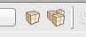

The MoSync profile database contains information about mobile platforms and devices. This helps the MoSync toolchain to build the correct package for each platform and device. The database comes in two flavors.
To set the active profile, click this button in the toolbar:
A dialog opens where you can choose which profile to set as the active one. The active profile will be used whenever you do a build or run on emulator. For platform based profiles, this dialog also has an option to filter profiles based on device capabilities (such as Bluetooth support, OpenGL support, etc.)
To build for the currently active profile, press the Build icon in the toolbar (it's the one to the left). To build for all applicable profiles, press the Build All icon in the toolbar.

Note: Prior to MoSync 3.0, all projects were created with the device based profile database. From 3.0 and onward, the platform based profile database is the default for all new projects.
The MoSync device based profile database contains information about hundreds of mobile devices - everything from screen sizes and memory amounts to obscure bugs and undocumented quirks. It can be used to tailor your application to different devices or create fallbacks for unsupported features.
Our device profile database is stored as a hierarchical filesystem structure - one directory per device vendor, each containing per-device subdirectories. Each device directory contains a C header file with information about the device formatted as C preprocessor definitions, and a textual reference to the associated runtime.
The profile header file can be used in MoSync programs to automatically modify their functionality depending on the target device: common information in the profiles include vendor and device names, screen size and API availability, for example Bluetooth or Location.
The ‘Devices Profiles’ frame will show you either the available platforms or devices, depending on your project configuration. (This will only show when you work with a project that makes use of the device based profile database.)
When you are developing or testing, you will only have one profile active at any one time. When you are ready to build your application for distribution for app stores, then you can build for many devices at the same time.
As an alternative to change platform or device, right click on your chosen option, and select ‘Set as Project Profile’: